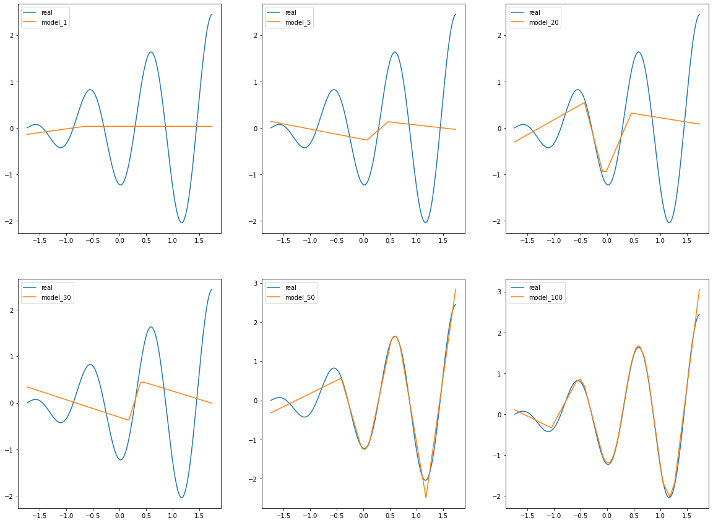

import numpy as np
import torch
import torch.utils.data as Data
import torch.nn as nn
import torch.nn.functional as F
import torch.optim as optim
from torch.autograd import Variable
from torchvision import datasets, transforms
from torchvision.utils import make_grid , save_image
%matplotlib inline
from sklearn.preprocessing import StandardScaler
import matplotlib.pyplot as plt
architecture_name = "regularized_autoencoder"
ngpu=1
device = torch.device("cuda:0" if (torch.cuda.is_available() and ngpu > 0) else "cpu")
device
device(type='cuda', index=0)
x1 = 2*np.pi*np.linspace(0,1.5,10000)
x2 = x1*np.cos(2*x1)
x3 = np.exp(-x1)*x1
X_data = np.concatenate((x1.reshape(x1.shape[0],1),\
x2.reshape(x1.shape[0],1)),axis=1)
X_data = StandardScaler().fit_transform(X_data)
X = torch.Tensor(X_data[:,0]).type(torch.FloatTensor)
y = torch.Tensor(X_data[:,1]).type(torch.FloatTensor)
# X_tc = torch.Tensor(X_data).type(torch.FloatTensor)
# print(X_tc.shape, X_tc.type())
# torch.Size([1000, 3]) torch.FloatTensor
plt.plot(x1,x2)
[<matplotlib.lines.Line2D at 0x7fa844c7deb0>]
def create_loader(X,y,batch_size=50,workers=12):
torch_dataset = Data.TensorDataset(X,y)
loader = Data.DataLoader(
dataset = torch_dataset,
batch_size = batch_size,
shuffle=True)
return loader
9. Usando weight_decay do Adam¶
class Net(nn.Module):
def __init__(self,h_dim=1,ngpu=ngpu):
super(Net, self).__init__()
self.h_dim = h_dim
self.hidden = nn.Linear(1, self.h_dim)
self.act1 = nn.ReLU()
self.out = nn.Linear(self.h_dim, 1)
def forward(self, x):
h = self.act1(self.hidden(x))
return self.out(h)
def init_weights(m):
if type(m) == nn.Linear:
torch.nn.init.xavier_normal_(m.weight).to(device)
m.bias.data.fill_(0.001)
def define_model(model_class,h_dim):
# Instanciamos as redes
net = model_class(h_dim).to(device)
if (device.type == 'cuda') and (ngpu > 1):
net = nn.DataParallel(net, list(range(ngpu)))
# Inicializamos os pesos
net.apply(init_weights)
learning_rate, beta1, beta2 = [1e-3,0.9,0.999]
eps,weight_decay,amsgrad = [1e-12,0.0,False]
net_optimizer = optim.Adam(net.parameters(),
lr=learning_rate,
betas=(beta1,beta2),
eps=eps,
weight_decay=weight_decay, # regularization: https://pytorch.org/docs/stable/_modules/torch/optim/adam.html#Adam
amsgrad=amsgrad)
return net,net_optimizer
mse_loss = nn.MSELoss()
def test_approximator(net,X,y,h_dim):
y_pred = net(X.view(-1,1).to(device)).detach()
plt.plot(X.cpu().numpy(),y.cpu().numpy(),label="real")
plt.plot(X.cpu().numpy(),y_pred.cpu().numpy(),label="approx")
plt.xlabel(f"{h_dim}")
plt.legend(loc=0)
plt.show()
loader = create_loader(X,y,batch_size=5,workers=12)
# net,net_optimizer = define_model(Net,5)
models = [define_model(Net,h_dim) for h_dim in [1,5,20,30,50,100]]
def train_model(model,optimizer):
for epoch in range(20):
loss_ = []
for _, (X_train,y_train) in enumerate(loader):
X_train = X_train.view(-1,1).to(device)
y_train = y_train.view(-1,1).to(device)
y_pred = model(X_train)
loss = mse_loss(y_pred,y_train)
loss.backward()
optimizer.step()
optimizer.zero_grad()
# print("Training loss for {} epoch: {}".format(epoch, loss))
return model
model_1 = train_model(models[0][0],models[0][1])
model_5 = train_model(models[1][0],models[1][1])
model_20 = train_model(models[2][0],models[2][1])
model_30 = train_model(models[3][0],models[3][1])
model_50 = train_model(models[4][0],models[4][1])
model_100 = train_model(models[5][0],models[5][1])
---------------------------------------------------------------------------
KeyboardInterrupt Traceback (most recent call last)
/tmp/ipykernel_30683/329273499.py in <module>
----> 1 model_1 = train_model(models[0][0],models[0][1])
2 model_5 = train_model(models[1][0],models[1][1])
3 model_20 = train_model(models[2][0],models[2][1])
4 model_30 = train_model(models[3][0],models[3][1])
5 model_50 = train_model(models[4][0],models[4][1])
/tmp/ipykernel_30683/587583672.py in train_model(model, optimizer)
7 y_pred = model(X_train)
8 loss = mse_loss(y_pred,y_train)
----> 9 loss.backward()
10 optimizer.step()
11 optimizer.zero_grad()
~/anaconda3/lib/python3.8/site-packages/torch/_tensor.py in backward(self, gradient, retain_graph, create_graph, inputs)
305 create_graph=create_graph,
306 inputs=inputs)
--> 307 torch.autograd.backward(self, gradient, retain_graph, create_graph, inputs=inputs)
308
309 def register_hook(self, hook):
~/anaconda3/lib/python3.8/site-packages/torch/autograd/__init__.py in backward(tensors, grad_tensors, retain_graph, create_graph, grad_variables, inputs)
152 retain_graph = create_graph
153
--> 154 Variable._execution_engine.run_backward(
155 tensors, grad_tensors_, retain_graph, create_graph, inputs,
156 allow_unreachable=True, accumulate_grad=True) # allow_unreachable flag
KeyboardInterrupt:
y_pred = []
y_pred.append(model_1(X.view(-1,1).to(device)).detach())
y_pred.append(model_5(X.view(-1,1).to(device)).detach())
y_pred.append(model_20(X.view(-1,1).to(device)).detach())
y_pred.append(model_30(X.view(-1,1).to(device)).detach())
y_pred.append(model_50(X.view(-1,1).to(device)).detach())
y_pred.append(model_100(X.view(-1,1).to(device)).detach())
plt.figure(figsize=(20,15))
plt.subplot(231)
plt.plot(X.cpu().numpy(),y.cpu().numpy(),label="real")
plt.plot(X.cpu().numpy(),y_pred[0].detach().cpu().numpy(),label="model_1")
plt.legend(loc=0)
plt.subplot(232)
plt.plot(X.cpu().numpy(),y.cpu().numpy(),label="real")
plt.plot(X.cpu().numpy(),y_pred[1].detach().cpu().numpy(),label="model_5")
plt.legend(loc=0)
plt.subplot(233)
plt.plot(X.cpu().numpy(),y.cpu().numpy(),label="real")
plt.plot(X.cpu().numpy(),y_pred[2].detach().cpu().numpy(),label="model_20")
plt.legend(loc=0)
plt.subplot(234)
plt.plot(X.cpu().numpy(),y.cpu().numpy(),label="real")
plt.plot(X.cpu().numpy(),y_pred[3].detach().cpu().numpy(),label="model_30")
plt.legend(loc=0)
plt.subplot(235)
plt.plot(X.cpu().numpy(),y.cpu().numpy(),label="real")
plt.plot(X.cpu().numpy(),y_pred[4].detach().cpu().numpy(),label="model_50")
plt.legend(loc=0)
plt.subplot(236)
plt.plot(X.cpu().numpy(),y.cpu().numpy(),label="real")
plt.plot(X.cpu().numpy(),y_pred[5].detach().cpu().numpy(),label="model_100")
plt.legend(loc=0)
plt.show()
